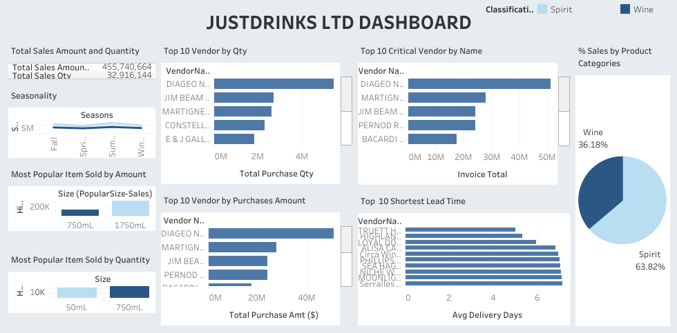
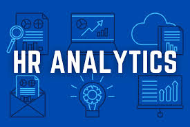
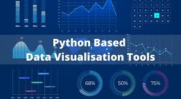
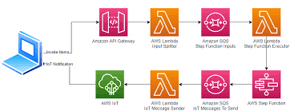

Ayomide Fadeyi
Data Specialist & Data Ops Enthusiast
Lagos, Nigeria | ayomide.fadeyi1@gmail.com | +2348069248663
LinkedIn | GitHub | Tableau | Kaggle | X
Profile
Results-driven Data Specialist with over 6 years of experience in data governance, analytics, business intelligence, and data engineering. Skilled in SQL Server administration, metadata management, and ETL pipeline development to ensure data quality and compliance. Proficient in SQL, Python, Power BI, Tableau, and cloud platforms (AWS, Azure, GCP), delivering data-driven solutions to enhance operational efficiency.
Work Experience
Database Administrator, Contec Global Limited
03/2025 - Present | Lagos, Nigeria
- Designed and managed Microsoft SQL Server instances with AlwaysOn availability groups and failover clustering.
- Implemented backup, recovery, and security protocols for data integrity and disaster recovery.
- Optimized database performance through monitoring and fine-tuning SQL Server configurations.
- Tech Stack: SQL Server, AlwaysOn, Failover Clustering, AWS
Demand Planner, AAVA Brands Limited
01/2024 - 02/2025 | Lagos, Nigeria
- Improved metadata accuracy and data quality by 25% through enterprise data asset management.
- Developed KPI dashboards, increasing efficiency by 30% using Power BI and SQL.
- Tech Stack: Python, SQL, Oracle Database, Power BI, Excel
Data Analyst - Sales, Hayat Kimya Limited
08/2022 - 12/2023 | Lagos, Nigeria
- Implemented data quality rules, improving data accuracy by 20%.
- Developed automated reporting frameworks, reducing manual effort by 40%.
- Monitored and analyzed operational KPI dashboards, leading to a ₦890M revenue increase.
- Supported data governance and security initiatives in line with business objectives.
- Tech Stack: Advanced Microsoft Excel, SAP ERP, Python, Microsoft Power BI
Projects
Powering Data for the Department of Energy - Building an ETL Pipeline
06/2025
- Designed and implemented an ETL pipeline to process energy consumption data.
- Integrated data from multiple sources into a centralized PostgreSQL database.
- Automated data cleaning and transformation using Python and Airflow.
- View Project Repository
- Tech Stack: Python, PostgreSQL, Apache Airflow, Pandas
JustDrink Dashboard
2024
- Developed an interactive dashboard to track beverage sales and inventory.
- Integrated SQL queries for real-time data updates.
- View Dashboard
- Tech Stack: Tableau, SQL
HR Analytics: Job Change of Data Scientists
2023
- Predicted data scientist job changes using machine learning models.
- Analyzed turnover factors with Python-based data exploration.
- View Notebook
- Tech Stack: Python, Jupyter Notebook, Pandas, Scikit-learn, Matplotlib
Udacity Data Investigation
08/2022
- Investigated datasets to uncover insights using statistical analysis.
- Applied SQL and Python for data cleaning and exploration.
- View Repository
- Tech Stack: Python, Jupyter Notebook, SQL, Pandas, NumPy
Udacity Data Visualization
08/2022
- Created interactive visualizations to communicate data insights.
- Used Python and Tableau for dashboard development.
- View Repository
- Tech Stack: Tableau, Python, Jupyter Notebook, Matplotlib, Seaborn
Amazon Review Sentiment Analysis
04/2022 - 05/2022
- Performed sentiment analysis on Amazon reviews using NLP techniques.
- Visualized trends with Matplotlib and seaborn.
- View Notebook
- Tech Stack: Python, Jupyter Notebook, NumPy, Pandas, Matplotlib, NLTK
SQL Solutions
2022 - 05/2025
- Developed SQL queries for data analysis and reporting.
- Optimized database performance with stored procedures.
- View Repository
- Tech Stack: SQL, MySQL, PostgreSQL, SQL Server
End-to-End Cryptocurrency Analytics
06/2024 - 12/2024
- Built a real-time ETL pipeline using CoinMarketCap API for cryptocurrency data.
- Created an interactive dashboard for real-time visualization.
- View Repository
- Tech Stack: Python, MySQL, SQLAlchemy, Matplotlib, Dash
Skills
- Data Management & Governance: Metadata Management, Data Cataloging, Data Quality, Access Controls
- Data Analytics & BI: Power BI, SQL, Python, Tableau, Excel
- Data Science: Machine Learning, NLP, Predictive Modeling
- Cloud & Data Engineering: AWS (Glue, RDS), SQL Server, MySQL, PostgreSQL, MongoDB, Apache Airflow
- Programming: Python, SQL, R
- Collaboration Tools: Git, GitHub, Slack, Jira